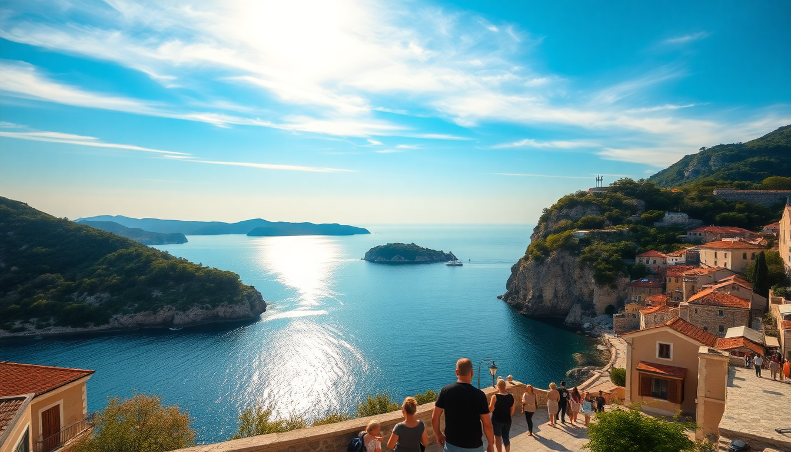

Best Day Trips from Dubrovnik: Cavtat, Lokrum & Montenegro

I spent a week in Dubrovnik last June, and by day three I was ready to escape the Old Town crowds. The good news: three solid day trips are within an hour’s reach—Cavtat for a lazy coastal afternoon, Lokrum for a half-day nature fix, and Kotor in Montenegro for a proper border-crossing adventure. Here’s exactly how each one went, what I’d do differently, and where the money actually matters.
Is Cavtat worth the ferry ride from Dubrovnik?
Yes, but with a catch. Cavtat is a small town 20 minutes south by direct ferry from Dubrovnik’s Old Port. The ride itself is the highlight—you glide past the city walls, the island of Lokrum, and the wooded coastline. Once you dock, you’re in a quiet harbor lined with cafes and a handful of pebbly beaches.
We skipped the main beach (too crowded) and walked the Rat peninsula trail instead. It’s a 40-minute loop through pine forest with views back toward Dubrovnik. For lunch, we ate at Konoba Toranj, a family-run place up a side street—grilled squid and a house white for about €25 total. The town’s main draw is the Racic family mausoleum by Ivan Mestrovic, tucked behind the cemetery. It’s small, free, and worth five minutes.
- Getting there: Jadrolinija ferries run hourly from the Old Port (€6 one way). Buy tickets at the kiosk, no advance booking needed.
- Crowd warning: Cavtat swells with cruise ship day-trippers between 11am and 2pm. Go early or late.
- Skip: The tourist-trap seafood platters on the main harbor strip. Overpriced and reheated.
What is there to do on Lokrum Island for a half-day?
Lokrum is a nature reserve 10 minutes by boat from Dubrovnik’s Old Port. It’s not a beach day—the island has no sand, just rocky coves and concrete sunbathing platforms. What it does have is shade, silence, and a refreshing lack of souvenir stalls.
We landed at 9am and walked straight to the Benedictine Monastery (entrance included in the ferry ticket). The cloister garden is pleasant, but the real payoff is the dead sea—a small saltwater pool inside the cliffs where you can float in total stillness. It gets packed by noon, so go first thing. After that, we hiked up to Fort Royal at the island’s highest point. The view over Dubrovnik and the Adriatic is the best you’ll get without a drone.
- Ferry logistics: Boats leave every 30 minutes from the Old Port (€5 round trip). Last return is around 7pm in summer.
- What to bring: Water, swimsuit, towel, and cash (the only cafe takes cash only). No shade on the upper trails.
- Watch out: The island has wild peacocks. They’re aggressive near picnic areas—don’t eat near them.
- Time budget: 3-4 hours is enough. Anything longer feels like killing time.
Can you really do Montenegro as a day trip from Dubrovnik?
Yes, but you need a plan. The drive to Kotor takes about 90 minutes each way, plus 30-60 minutes at the border crossing (sometimes more). We went with a small-group tour from GetYourGuide that handled the paperwork, which saved us the headache of renting a car and navigating the border ourselves.
The tour dropped us in Kotor Old Town for two hours—enough time to climb the St. John’s Fortress (1,350 steps, steep, do it early) and grab a burek at Bakery Forza near the Sea Gate. After that, we drove the Kotor Serpentine road for a 20-minute photo stop at the top. The view of the fjord-like bay is the real reason to come.
- Border tips: Bring your passport. EU citizens breeze through; non-EU can wait 30+ minutes. No visa needed for most nationalities for day trips.
- Best tour option: We used Montenegro Day Trip from Dubrovnik (GetYourGuide). It included a stop in Perast for the Our Lady of the Rocks island church, which was a nice bonus.
- What we’d skip: The “free time” in Budva. It’s a generic beach town with nothing that Kotor doesn’t do better.
- Cost: Tour was €65 per person, plus €10 for the fortress entry. Cheaper than renting a car and paying for fuel and parking.
When is the best time to take these day trips?
June and September are ideal. We went in late June and found Cavtat and Lokrum manageable, but Kotor was hot—35°C by 1pm. July and August will be worse, especially at the border crossing where cars idle in direct sun.
- Cavtat: Best in May or September when the water is swimmable but the crowds haven’t arrived.
- Lokrum: Early morning (before 10am) any month. Afternoon sun is brutal with no shade on the trails.
- Kotor: Go on a weekday. Weekend border traffic can double the crossing time.
Which day trip is best for families with kids?
Cavtat. The ferry ride is short and smooth, the harbor has ice cream and playgrounds, and the Rat peninsula trail is flat enough for strollers. Lokrum’s rocky terrain and lack of facilities makes it tough with toddlers. Kotor’s fortress climb is too steep for young kids, and the border wait can turn cranky fast.
For older kids (10+), Lokrum’s dead sea and peacock-spotting are a hit. We saw a family with two teens having a blast on the island’s mini-trampoline near the monastery.
What should I pack for a day trip from Dubrovnik?
Keep it light but strategic. For all three trips, I used the same bag:
- Water bottle (refillable—tap water in Croatia is safe)
- Swimwear and a quick-dry towel (Lokrum and Cavtat both have swim spots)
- Cash (small shops in Cavtat and Lokrum don’t take cards)
- Sunscreen and a hat (shade is scarce on Lokrum and the Kotor fortress)
- Passport (mandatory for Montenegro, even for day trips)
- Comfortable walking shoes (the Kotor fortress steps are uneven stone)
FAQ
Do I need a passport for Montenegro from Dubrovnik? Yes. Even for a day trip, you must carry a valid passport or EU ID card. Non-EU citizens should check visa requirements, but most nationalities (US, UK, Canada, Australia) get visa-free entry for stays under 90 days.
Can I visit Cavtat and Lokrum in the same day? Technically yes, but I wouldn’t. Both are half-day trips, but the ferry schedules don’t align well—you’d waste time waiting for connections. Pick one per day and enjoy it without rushing.
Is the Kotor fortress climb worth it? If you’re fit and the weather is under 30°C, yes. The view from the top is genuinely spectacular. But if it’s hot or you have mobility issues, skip it—the view from the drive up the Serpentine road is 80% as good with zero sweat.
Conclusion
- Cavtat is the chill option: ferry ride, harbor lunch, easy walk. Best for families or a recovery day.
- Lokrum is the nature fix: quiet trails, a unique saltwater pool, and the best views of Dubrovnik from the water. Go early, leave by lunch.
- Kotor is the adventure: border crossing, fortress climb, and a taste of a different country. Worth it for the scenery, but not for a relaxed day.
- Book ferries at the port, not online—prices are the same and you avoid booking fees.
- Bring cash and a passport for every trip, even if you think you won’t need them.